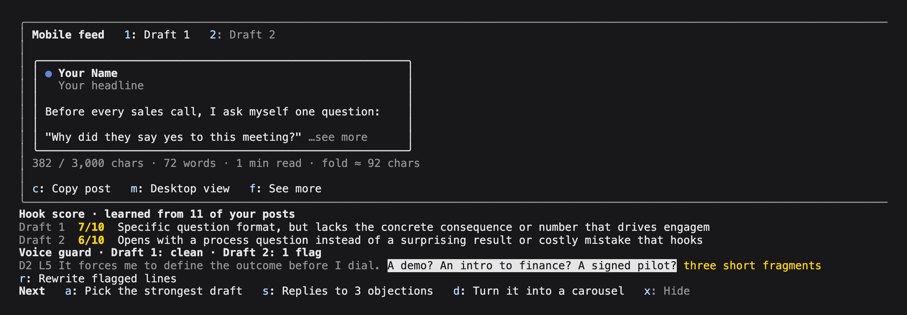
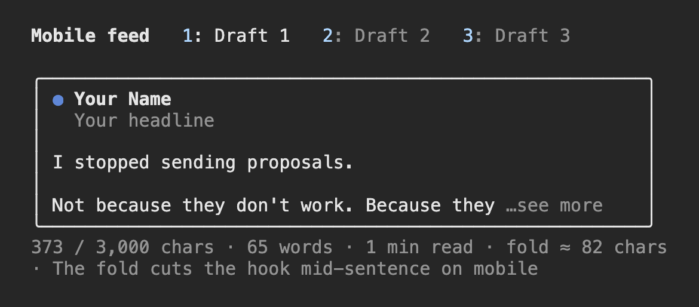
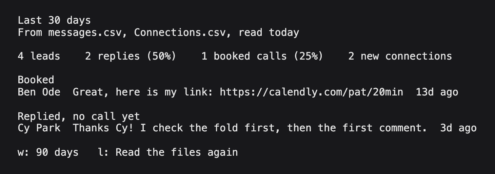
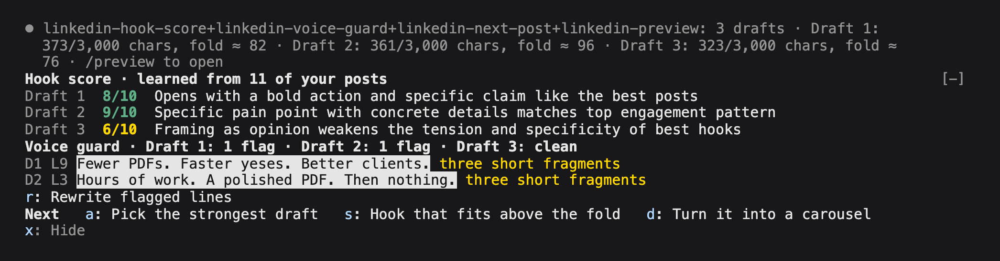
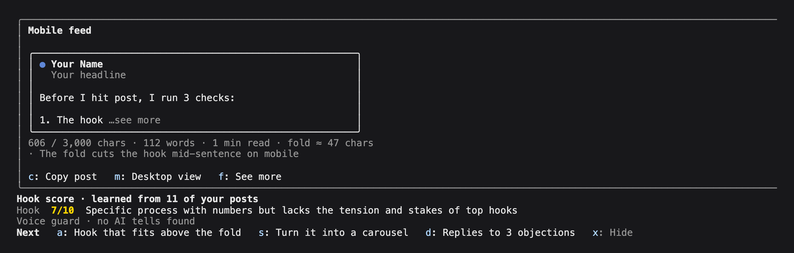

5 Claude Code mods
for LinkedIn.
Ask Claude for a LinkedIn post like you always do. When Claude finishes, the mods show each draft the way the feed cuts it, score the hook against your own best posts, flag the lines that sound AI-written and offer the next step. A fifth one counts your leads, replies and booked calls.
Needs Claude Code 2.1.287 or newer. Runs in the terminal and in the Code tab of the Claude Desktop app.

Install all five,
or only the ones you want.
- 01
Post preview
linkedin-previewEach draft on a LinkedIn post card, cut where "…see more" cuts it. Both views show 3 feed lines: about 54 characters a line on a phone and about 78 on desktop. It flags the bold, headings and links LinkedIn shows as raw symbols, counts characters against 3,000, gives each draft its own tab and copies the post with the formatting removed.
- Keys in the pane
- 1-9 drafts · m mobile or desktop · f see more · c copy
- Commands
/preview·/preview-profile Your Name | Your headline
- 02
Hook score
linkedin-hook-scoreScores every hook from 1 to 10 against your own best posts, with one plain reason. It learns from LinkedIn's analytics export and your data archive, or from a
top-posts.mdfile you paste your best posts into. It runs on your own Claude plan, with haiku as the default model.- Keys
- None.
[-]folds the band. - Commands
/hook-score-learn·/hook-score·/hook-score-model
- 03
Voice guard
linkedin-voice-guardFlags the phrases that make a draft sound AI-written and highlights them in their line: em dashes, contrast lines like "X, not Y" and "stop X, start Y", three short fragments in a row, and words like delve and leverage. Press r and Claude rewrites only the flagged lines. The rules live in a text file you can edit.
- Keys in the band
- r rewrite flagged lines · v show all flags
- Commands
/voice-guard·/voice-guard-add·/voice-guard-remove·/voice-guard-rules
- 04
Next post
linkedin-next-postAfter a draft, 3 next steps on one key each, picked from what the draft needs, like a carousel, replies to 3 objections, a hook that fits above the fold, 5 more hooks or the strongest of several drafts. Picking needs no model call, so the buttons show at once.
- Keys in the band
- a s d send a step · x hide
- Command
/next-post
- 05
Pipeline
linkedin-pipelineA pane with your leads, replies and booked calls for the last 7, 30 or 90 days. It reads your LinkedIn data export (messages and connections) or any CRM CSV with a stage column, and sends nothing anywhere.
- Keys in the pane
- w 7, 30 or 90 days · l read the files again
- Command
/pipeline
To use the keys in a band, click it or press ctrl+x then tab. Clicking a button works too. No two mods share a key.
Set up
in 2 minutes.
In a Claude Code session, in the terminal or in the Desktop app's Code tab, add our marketplace once:
/plugin marketplace add ivanmanfre/manfrediThen install the ones you want. Each one installs on its own.
/plugin install linkedin-preview@manfredi /plugin install linkedin-hook-score@manfredi /plugin install linkedin-voice-guard@manfredi /plugin install linkedin-next-post@manfredi /plugin install linkedin-pipeline@manfrediThen run /plugin. Each installed mod is listed as active.
In the Claude Desktop app
- 01
Open the Code tab.
Pick a folder for your LinkedIn work. A new empty folder is fine. Say yes when it asks if you trust it.
- 02
Add the marketplace.
Type
/plugin marketplace add ivanmanfre/manfrediin the message box and press Enter. - 03
Install the mods.
Type
/plugin install linkedin-hook-score@manfrediand press Enter. Do the same for each mod you want. - 04
Start a new session.
The mods load in a new session in the Code tab. Type
/pluginto see them listed as active. - 05
Ask for a post.
For example:
Write a LinkedIn post about <your topic>. When Claude finishes, the preview, the score, the flags and the next steps show up in the Code tab. - 06
Teach the hook score your posts.
Put your LinkedIn exports in that folder, or leave them in Downloads, and type
/hook-score-learn. No exports yet? The same command makes atop-posts.mdfile for you to paste your best posts into.
What shows up
after a draft.


/pipeline on a test export with sample conversations: leads, replies and booked calls for the last 30 days. Scroll sideways for the full lines.

Before you install.
Where do they run?
In the Claude Code terminal and in the Code tab of the Claude Desktop app, on Claude Code 2.1.287 or newer. Check with claude --version. They don't run in the claude.ai chat.
What do they send, and where?
The hook score asks your own Claude, through Claude Code, to score hooks: one short request per draft turn, with no API key. The voice guard and next post send a prompt to Claude in your session only when you press a key, and you see it in the transcript. The preview and the pipeline send nothing anywhere. None of them make network calls. claude plugin validate <folder> lists every event and call a mod uses, so you can check before you install.
How does the hook score learn my posts?
LinkedIn gives you two free exports. Your numbers: on your profile, Analytics, then Content, then Export. Your post text: Settings, Data privacy, Get a copy of your data, with Posts ticked. Put both files in your project folder or leave them in Downloads and run /hook-score-learn. It finds them by their LinkedIn names and says how many posts it learned. Without exports, it makes a top-posts.md file for 5 to 20 of your best posts.
Nothing shows up. What now?
Update Claude Code if it's older than 2.1.287, and start a new session after you install. "disableAllHooks": true in your settings turns every mod off, and some organizations block user mods. A preview pane that opens by itself needs a terminal 144 columns wide. /preview opens it at any width.
How do I remove one?
Run /plugin, open Installed, pick the mod and uninstall it.
Try them for one session.
Unzip, open the linkedin-mods-pack folder in your terminal and start Claude Code with:
Free · version 0.1.1 · 100 KB